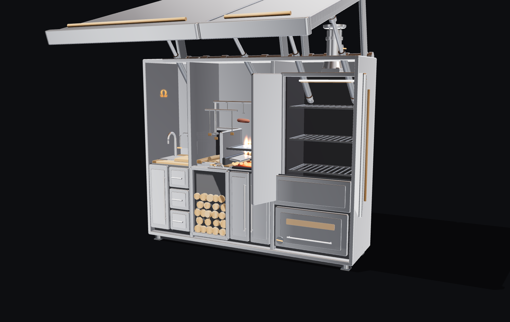
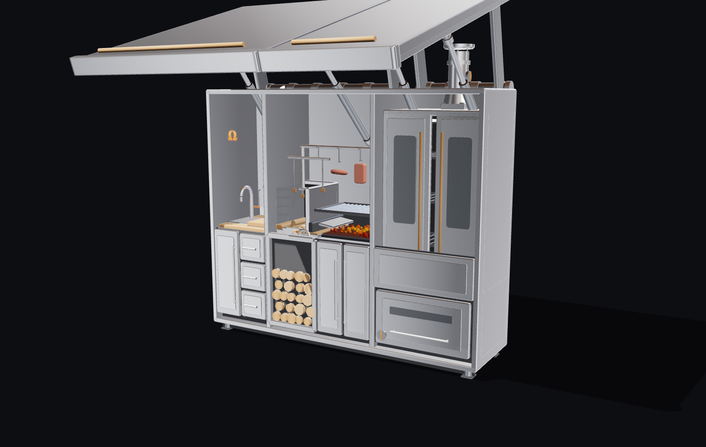
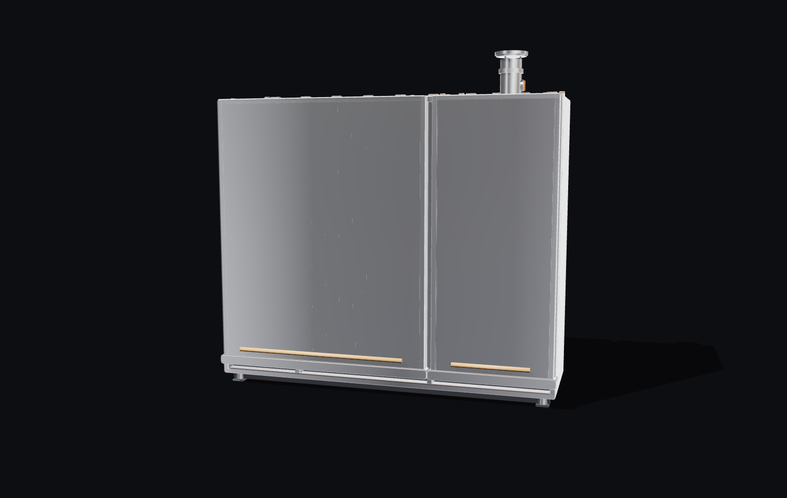
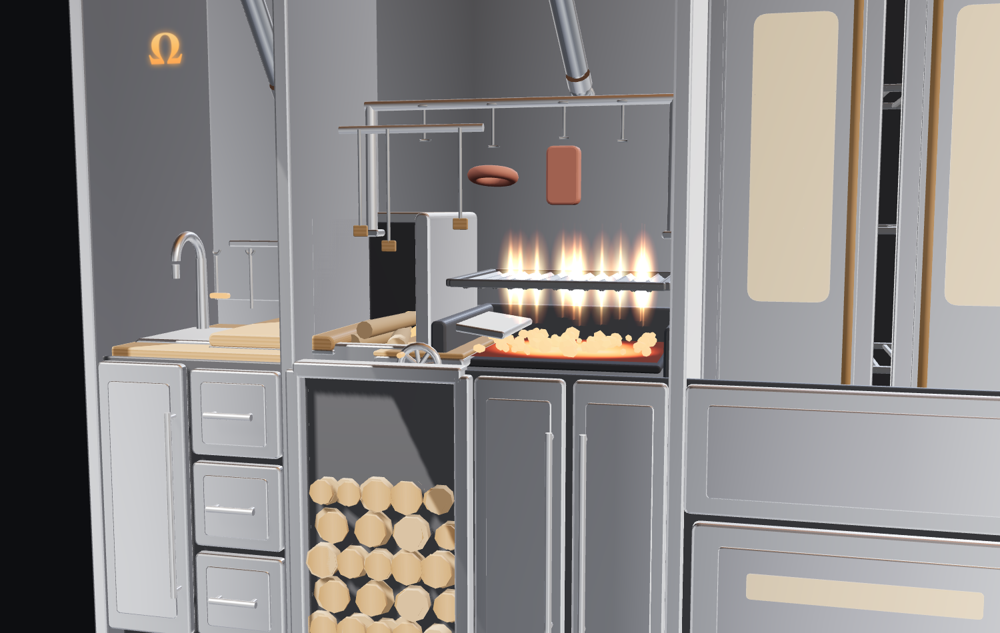
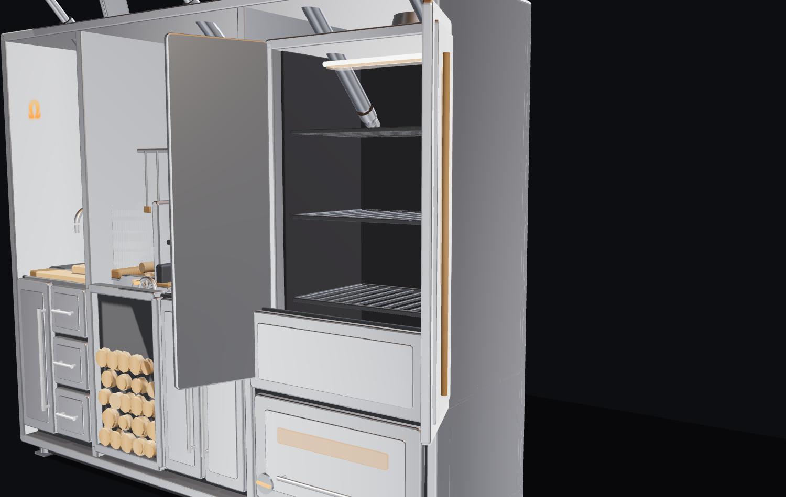
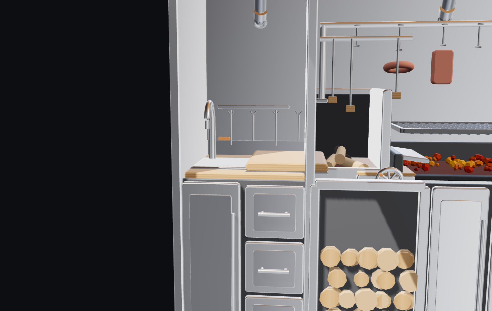
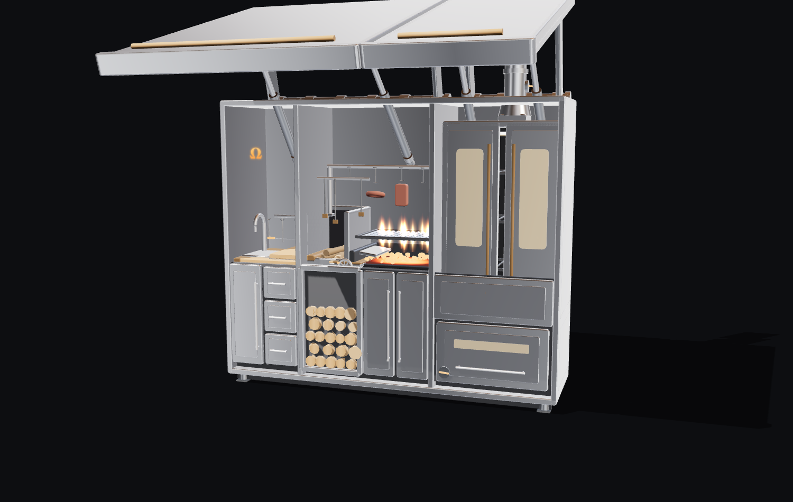
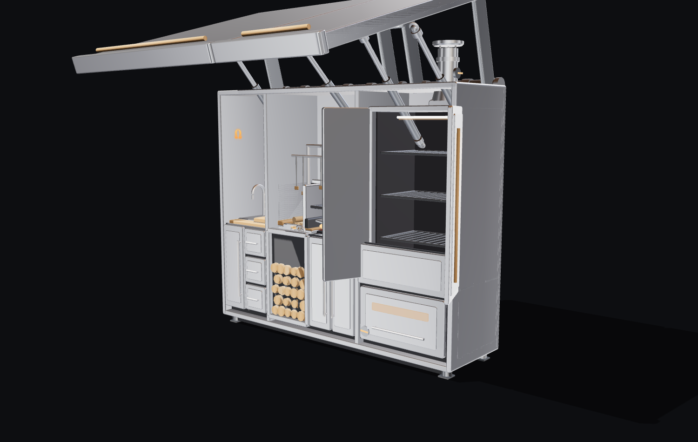

<meta charset="utf-8">
<meta name="viewport" content="width=device-width, initial-scale=1, viewport-fit=cover">
<title>omegaClass — One cabinet. Every fire.</title>
<link rel="canonical" href="https://ckluis.github.io/experiments/3d/omegaClassGrills/">
<meta property="og:type" content="article">
<meta property="og:site_name" content="ckluis / experiments">
<meta property="og:url" content="https://ckluis.github.io/experiments/3d/omegaClassGrills/">
<meta property="og:title" content="omegaClass — One cabinet. Every fire.">
<meta property="og:description" content="One wide sealed stainless cabinet that opens into a full outdoor fire station in three zones: a prep + sink counter, a brasero-fed Argentine parrilla, and a vertical rack smoker.">
<meta property="og:image" content="https://ckluis.github.io/experiments/previews/social-omegaClassGrills.png">
<meta property="og:image:width" content="1200">
<meta property="og:image:height" content="630">
<meta property="og:image:alt" content="omegaClass — Concept, 06 — Design tests. One wide sealed stainless cabinet that opens into a full outdoor fire station in">
<meta name="twitter:card" content="summary_large_image">
<meta name="twitter:site" content="@ckluis">
<meta name="twitter:creator" content="@ckluis">
<meta name="twitter:title" content="omegaClass — One cabinet. Every fire.">
<meta name="twitter:description" content="One wide sealed stainless cabinet that opens into a full outdoor fire station in three zones: a prep + sink counter, a brasero-fed Argentine parrilla, and a vertical rack smoker.">
<meta name="twitter:image" content="https://ckluis.github.io/experiments/previews/social-omegaClassGrills.png">
<meta name="description" content="omegaClass — one wide sealed stainless cabinet that opens into a full outdoor fire station: a brasero-fed parrilla, a vertical smoker with racks, and a prep + sink counter, sheltered by two lift-up roofs. Built so a master asador and a master pitmaster can both work it at once.">
<link rel="stylesheet" href="style.css">
<script defer src="vendor/three.min.js"></script>
<script defer src="vendor/OrbitControls.js"></script>
<script defer src="src/grillModel.js"></script>
<script defer src="src/app.js"></script>

<!-- ============================ NAV ============================ -->
<header class="nav" id="top">
  <a class="nav__brand" href="#top" aria-label="omegaClass home">
    <span class="omega" aria-hidden="true">Ω</span>
    <span class="nav__word">omegaClass</span>
  </a>
  <nav class="nav__links" aria-label="Primary">
    <a href="#story">The cabinet</a>
    <a href="#zones">The zones</a>
    <a href="#postures">Postures</a>
    <a href="#configurator">Configure</a>
    <a href="#reserve" class="nav__cta">Reserve</a>
  </nav>
</header>

<!-- ============================ HERO ============================ -->
<section class="hero" id="hero">
  
  <div class="hero__scrim" aria-hidden="true"></div>
  <div class="hero__inner">
    <p class="hero__eyebrow reveal">Ω &nbsp;·&nbsp; A whole asado + smoke station in one cabinet</p>
    <h1 class="hero__title reveal">
      <span class="hero__word">omega</span><span class="hero__word hero__word--molten">Class</span>
    </h1>
    <p class="hero__tag reveal">One cabinet. Every fire.</p>
    <p class="hero__sub reveal">A wide sealed stainless cabinet that opens into a full outdoor fire station — a brasero-fed parrilla, a vertical rack smoker, and a prep + sink counter, sheltered by two lift-up roofs. Built so a master asador and a master pitmaster can both work it at once.</p>
    <div class="hero__cta reveal">
      <a href="#configurator" class="btn btn--molten">Configure it <span aria-hidden="true">↓</span></a>
      <a href="#reserve" class="btn btn--ghost">Reserve yours</a>
    </div>
  </div>
  <div class="hero__scroll" aria-hidden="true"><span>Scroll</span></div>
</section>

<!-- ============================ THE STORY ============================ -->
<section class="section story" id="story">
  <div class="section__head reveal">
    <p class="kicker">Built for two masters</p>
    <h2 class="display">One sealed cabinet.<br>A full fire station inside.</h2>
    <p class="lede">Closed, omegaClass is a single weatherproof stainless monolith on leveling feet. Open, it becomes a complete outdoor fire station — laid out left to right so an asador and a pitmaster can each work their own fire without ever fighting for space.</p>
  </div>

  <figure class="story__hero reveal">
    
    <figcaption class="story__cap">
      <span class="story__cap-k">Open Station</span>
      Both roofs up — prep + sink, the brasero-fed parrilla, and the sealed vertical smoker, all revealed and sheltered under two lift-up lids.
    </figcaption>
  </figure>

  <div class="story__split">
    <figure class="story__fig reveal">
      
    </figure>
    <div class="story__copy reveal">
      <p class="story__no">Ω / the craft</p>
      <h3 class="story__title">Made to be lived with for a lifetime.</h3>
      <p class="story__body">Marine 304/316 stainless, brushed and polished, folded and welded into one clean carcass — <strong>240 × 68 × 205 cm</strong>, roughly <strong>300 kg</strong> of grounded steel on adjustable leveling feet. Warm butcher-block counters. Corrugated roof undersides. Visible gas struts. Every seam and reveal is meant to be seen up close.</p>
      <p class="story__body">Sealed, it locks away weatherproof — a quiet monolith on the terrace. It is not a parts-bin outdoor kitchen. It is one considered object, engineered end to end, built to outlast the people who cook on it.</p>
      <ul class="story__ticks">
        <li>Marine 304 / 316 stainless</li>
        <li>Handmade, welded &amp; polished</li>
        <li>Two lift-up roofs on gas struts</li>
        <li>Locks weatherproof shut</li>
      </ul>
    </div>
  </div>
</section>

<!-- ============================ THE THREE ZONES ============================ -->
<section class="section zones" id="zones">
  <div class="section__head reveal">
    <p class="kicker">The anatomy · three zones</p>
    <h2 class="display">Three fires. One counter.</h2>
    <p class="lede">Open, the station runs left to right in three zones at a ~92 cm working counter — prep + sink, the asador's brasero and crank parrilla, and the pitmaster's vertical smoker. Wide enough that two masters never share a fire.</p>
  </div>

  <!-- Zone: Parrilla -->
  <article class="zone reveal">
    <figure class="zone__media">
      
    </figure>
    <div class="zone__copy">
      <p class="zone__no">Ω 01 · the asador</p>
      <h3 class="zone__title">Brasero &amp; wide crank parrilla</h3>
      <p class="zone__body">A dedicated <strong>brasero</strong> burns wood and charcoal down to embers; rake the glowing coals under a wide <strong>V-channel parrilla</strong> on a front crank — the real Argentine method. Ride the crank across a ~15 cm range to dial the heat, hang a sausage coil from the overhead rack, and let fat drain to a channel and grease cup. A <strong>wood store</strong> of split dried logs sits right below the fire.</p>
      <dl class="zone__dl">
        <div><dt>Brasero</dt><dd>Wood-fired ember maker</dd></div>
        <div><dt>Parrilla</dt><dd>Wide V-channel grate</dd></div>
        <div><dt>Crank</dt><dd>~15 cm height range</dd></div>
        <div><dt>Fuel</dt><dd>Wood store + hanging rack</dd></div>
      </dl>
    </div>
  </article>

  <!-- Zone: Smoker -->
  <article class="zone zone--flip reveal">
    <figure class="zone__media">
      
    </figure>
    <div class="zone__copy">
      <p class="zone__no">Ω 02 · the pitmaster</p>
      <h3 class="zone__title">The vertical smoker</h3>
      <p class="zone__body">An insulated double-wall chamber with <strong>dual cabinet doors</strong> hinged at the outer edges and <strong>three stacked racks</strong> inside. A <strong>firebox below</strong> drives heat and clean smoke up through a baffle and out a top flue with a damper and cap — a true vertical cabinet smoker. Seal the doors and smoke rises through the food; it shows at the flue while it runs low and slow.</p>
      <dl class="zone__dl">
        <div><dt>Chamber</dt><dd>Insulated double-wall</dd></div>
        <div><dt>Doors</dt><dd>Dual, hinged outer edges</dd></div>
        <div><dt>Racks</dt><dd>Three stacked</dd></div>
        <div><dt>Draft</dt><dd>Firebox below + damped flue</dd></div>
      </dl>
    </div>
  </article>

  <!-- Zone: Prep -->
  <article class="zone reveal">
    <figure class="zone__media">
      
    </figure>
    <div class="zone__copy">
      <p class="zone__no">Ω 03 · the shared zone</p>
      <h3 class="zone__title">Sink, counter &amp; storage</h3>
      <p class="zone__body">The shared left zone is a real prep station: a stainless / butcher-block <strong>counter</strong> at ~92 cm, a stainless <strong>sink</strong> with a gooseneck faucet, and a wood <strong>cutting board</strong> — the surface both masters use to prep, plate and wrap. Below, lower cabinets and drawers keep tools inside the sealed box. Closed, the whole station locks away weatherproof.</p>
      <dl class="zone__dl">
        <div><dt>Counter</dt><dd>Butcher-block, ~92 cm</dd></div>
        <div><dt>Sink</dt><dd>Stainless bowl + gooseneck</dd></div>
        <div><dt>Storage</dt><dd>Lower cabinets + drawers</dd></div>
        <div><dt>Roofs</dt><dd>Two lids, front edge ~230 cm</dd></div>
      </dl>
    </div>
  </article>
</section>

<!-- ============================ POSTURES GALLERY ============================ -->
<section class="section postures" id="postures">
  <div class="section__head reveal">
    <p class="kicker">Postures gallery</p>
    <h2 class="display">From sealed cabinet<br>to full fire station.</h2>
    <p class="lede">Four states, one station — the sealed monolith, both roofs raised, the asador's flames up, and the pitmaster's smoker loaded on its racks.</p>
  </div>

  <div class="gallery">
    <figure class="shot reveal">
      
      <figcaption class="shot__cap">
        <span class="shot__no">Ω 01</span>
        <span class="shot__label">Closed</span>
        <span class="shot__text">One sealed stainless cabinet on leveling feet — weatherproof and locked. 240×68×205 cm.</span>
      </figcaption>
    </figure>
    <figure class="shot reveal">
      
      <figcaption class="shot__cap">
        <span class="shot__no">Ω 02</span>
        <span class="shot__label">Open Station</span>
        <span class="shot__text">Both roofs up — brasero, wide parrilla, sink and counter, and the sealed smoker, all revealed and sheltered.</span>
      </figcaption>
    </figure>
    <figure class="shot reveal">
      
      <figcaption class="shot__cap">
        <span class="shot__no">Ω 03</span>
        <span class="shot__label">Asado</span>
        <span class="shot__text">Brasero lit, coals raked under the parrilla, flames up — and the smoker running sealed, smoke curling from its flue.</span>
      </figcaption>
    </figure>
    <figure class="shot reveal">
      
      <figcaption class="shot__cap">
        <span class="shot__no">Ω 04</span>
        <span class="shot__label">Load the Smoker</span>
        <span class="shot__text">Cookbox doors open on three racks, firebox glowing below — a vertical smoker, smoke rising through the food.</span>
      </figcaption>
    </figure>
  </div>
</section>

<!-- ============================ THE CONFIGURATOR (the one live 3D) ============================ -->
<section class="section config" id="configurator">
  <div class="section__head reveal">
    <p class="kicker">Interactive · the one live model</p>
    <h2 class="display">Configure the station.</h2>
    <p class="lede">This one is live. Drag to orbit the real 3D model, then lift the roofs, open the smoker, and light the fires — or drop into a posture and watch the station move.</p>
  </div>

  <div class="config__stage reveal">
    <div class="config__canvas-wrap">
      <div class="viz" data-viz="config">
        <div class="viz__fallback" hidden>
          <div class="fallback__omega">Ω</div>
          <p class="fallback__title">Live configurator unavailable</p>
          <p class="fallback__body">WebGL is required to drive the 3D model. The postures gallery and full spec above cover every state.</p>
          <p class="viz__diag" aria-hidden="true"></p>
        </div>
      </div>
      <div class="config__caption">
        <p class="config__posture" id="config-posture-label">Closed</p>
        <p class="config__cap" id="config-caption">One sealed stainless cabinet on leveling feet — weatherproof and locked. 240×68×205 cm.</p>
      </div>
    </div>

    <div class="config__controls">
      <div class="presets" role="group" aria-label="Posture presets">
        <button class="preset is-active" data-posture="closed">Closed</button>
        <button class="preset" data-posture="station">Open Station</button>
        <button class="preset" data-posture="asado">Asado</button>
        <button class="preset" data-posture="smoker">Load the Smoker</button>
      </div>

      <div class="scrub" data-axis="roof">
        <div class="scrub__top">
          <label for="scrub-roof">Open the roof</label>
          <output id="out-roof">0%</output>
        </div>
        <input type="range" id="scrub-roof" min="0" max="100" value="0" step="1" aria-label="Open the roof">
        <p class="scrub__hint">Both lids sealed ↔ lifted into high overhead roofs · station revealed</p>
      </div>

      <div class="scrub" data-axis="doors">
        <div class="scrub__top">
          <label for="scrub-doors">Open the smoker</label>
          <output id="out-doors">0%</output>
        </div>
        <input type="range" id="scrub-doors" min="0" max="100" value="0" step="1" aria-label="Open the smoker">
        <p class="scrub__hint">Dual doors sealed ↔ swung open · three racks revealed</p>
      </div>

      <div class="scrub" data-axis="fire">
        <div class="scrub__top">
          <label for="scrub-fire">Light the fires</label>
          <output id="out-fire">0%</output>
        </div>
        <input type="range" id="scrub-fire" min="0" max="100" value="0" step="1" aria-label="Light the fires">
        <p class="scrub__hint">Cold ↔ brasero + parrilla flames · smoker firebox glowing · flue smoke when the doors are shut</p>
      </div>

      <div class="scrub scrub--minor" data-axis="grate">
        <div class="scrub__top">
          <label for="scrub-grate">Grate height</label>
          <output id="out-grate">40%</output>
        </div>
        <input type="range" id="scrub-grate" min="0" max="100" value="40" step="1" aria-label="Grate height">
        <p class="scrub__hint">Low sear ↔ gentle · ~15 cm crank range</p>
      </div>
    </div>
  </div>
</section>

<!-- ============================ SPECS ============================ -->
<section class="section specs" id="specs">
  <div class="section__head reveal">
    <p class="kicker">The specification</p>
    <h2 class="display">Every number is real.</h2>
    <p class="lede">A complete asado + smoke station that seals into one weatherproof stainless cabinet — engineered on paper, end to end.</p>
  </div>

  <div class="spectable reveal">
    <div class="spectable__scroll">
      <table>
        <caption class="sr-only">omegaClass full specification</caption>
        <thead>
          <tr><th scope="col">System</th><th scope="col">Spec</th><th scope="col">Detail</th></tr>
        </thead>
        <tbody>
          <tr><td>Cabinet</td><td>240 × 68 × 205 cm</td><td>Wide sealed, lockable, weatherproof marine 304/316 stainless on leveling feet</td></tr>
          <tr><td>Layout</td><td>Three zones</td><td>Left-to-right: prep + sink · brasero + crank parrilla · vertical smoker — two masters at once</td></tr>
          <tr><td>Mass</td><td>~300 kg</td><td>Grounded all-stainless station; anti-tip weighting for the raised roof lids</td></tr>
          <tr><td>Counter</td><td>~92 cm</td><td>Stainless / butcher-block working height across the shared prep zone</td></tr>
          <tr><td>Roof lids</td><td>Two · ~230 cm</td><td>Corrugated-underside lids on gas struts; each lifts up-and-forward into an overhead roof, task lights below</td></tr>
          <tr><td>Brasero</td><td>Wood-fired</td><td>Burns wood/charcoal to embers; ledge rakes glowing coals under the parrilla; wood store below</td></tr>
          <tr><td>Parrilla</td><td>~15 cm travel</td><td>Wide V-channel grate on a front crank; overhead hanging rack; fat drains to a grease cup</td></tr>
          <tr><td>Vertical smoker</td><td>Dual doors · 3 racks</td><td>Insulated chamber; firebox below drives smoke up through a baffle and the racks, out a damped flue</td></tr>
          <tr><td>Prep</td><td>Sink + counter</td><td>Stainless sink bowl + gooseneck faucet; wood cutting board; lower cabinets and drawers</td></tr>
        </tbody>
      </table>
    </div>
  </div>
</section>

<!-- ============================ RESERVE ============================ -->
<section class="section reserve" id="reserve">
  <div class="reserve__inner reveal">
    
    <div class="reserve__content">
      <p class="kicker">Reserve</p>
      <h2 class="reserve__title">Claim a place<br>in the first run.</h2>
      <p class="reserve__lede">A lifetime asado + smoke station in marine stainless that seals into one weatherproof cabinet — the two roofs, the brasero-fed parrilla, the vertical smoker, the sink and the storage, in a single object. This is a consultative build: reserve, and we walk the full plan with you. Concept reservation, fully refundable.</p>
      <div class="reserve__price">
        <div class="price">
          <span class="price__label">MSRP from</span>
          <span class="price__amount"><span class="price__cur">$</span>21,000</span>
          <span class="price__note">Founder's edition · limited first run</span>
        </div>
        <div class="price price--deposit">
          <span class="price__label">Reserve with</span>
          <span class="price__amount"><span class="price__cur">$</span>500</span>
          <span class="price__note">Refundable deposit</span>
        </div>
      </div>
      <div class="reserve__cta">
        <a href="#reserve" class="btn btn--molten btn--lg">Reserve yours</a>
        <a href="PLAN.md" class="btn btn--ghost btn--lg">Request the full plan</a>
      </div>
      <ul class="reserve__ticks">
        <li>Marine 304/316 stainless</li>
        <li>Two lids lift into roofs</li>
        <li>Brasero-fed parrilla</li>
        <li>Vertical rack smoker</li>
        <li>Sink + counter + storage</li>
        <li>Seals weatherproof shut</li>
      </ul>
    </div>
  </div>
</section>

<!-- ============================ FOOTER ============================ -->
<footer class="footer">
  <div class="footer__mark">
    <span class="omega omega--xl" aria-hidden="true">Ω</span>
    <span class="footer__word">omegaClass</span>
  </div>
  <p class="footer__tag">One cabinet. Every fire.</p>
  <nav class="footer__nav" aria-label="Footer">
    <a href="#story">The cabinet</a>
    <a href="#zones">The zones</a>
    <a href="#configurator">Configure</a>
    <a href="#reserve">Reserve</a>
    <a href="../../index.html">← Experiments hub</a>
  </nav>
  <p class="footer__fine">Concept reveal. A 3D product study — real numbers, engineered on paper. Ω</p>
</footer>
